INDEGENOUS ANIMALS OF SRI LANKA
YALA NATIONAL PARK
VISIT PAGEWILAPTTU NATIONAL PARK
VISIT PAGENestled within the lush landscapes of Sri Lanka, a treasure trove of biodiversity unfolds, showcasing a myriad of indigenous wildlife that calls this island nation home. From majestic mammals to mesmerizing reptiles and vibrant birds, Sri Lanka's ecosystems harbor a unique array of species found nowhere else in the world. This introduction invites you to embark on a journey through the diverse wildlife kingdom of Sri Lanka, where each creature plays a vital role in the intricate tapestry of the island's natural heritage. Join us as we explore the habitats that support these indigenous species, learn about their behaviors, and appreciate the ongoing efforts to conserve and protect the rich biodiversity that makes Sri Lanka a truly exceptional destination for wildlife enthusiasts.
MAMMALS
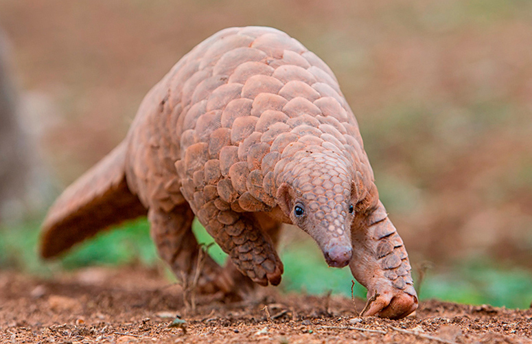 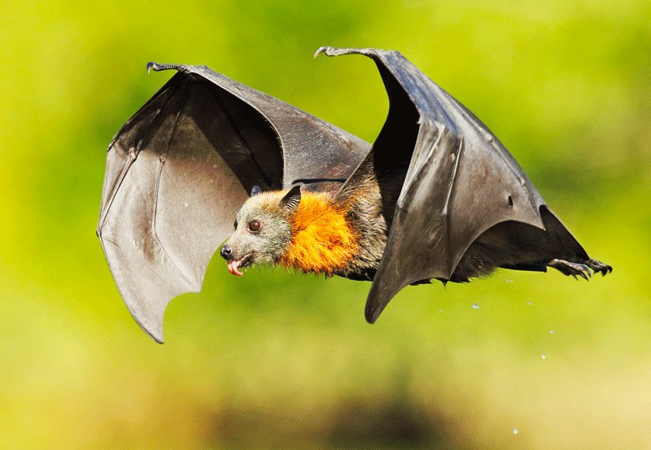 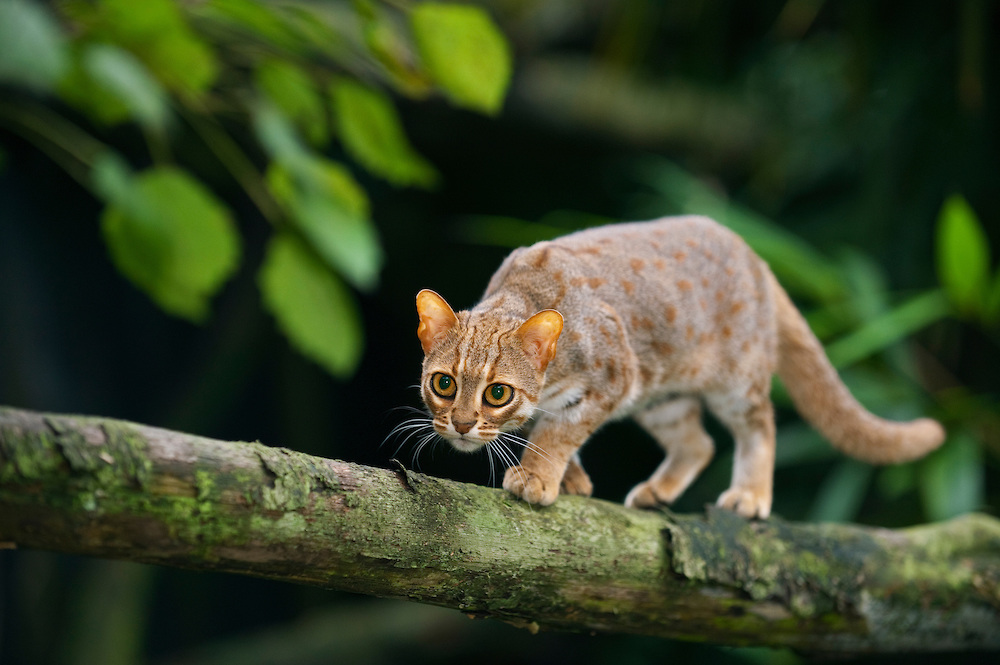
Sri Lanka's indigenous mammals captivate with diversity. From majestic elephants to elusive leopards and playful macaques, each species adds vibrancy to the island's rich wildlife tapestry.
BIRDS
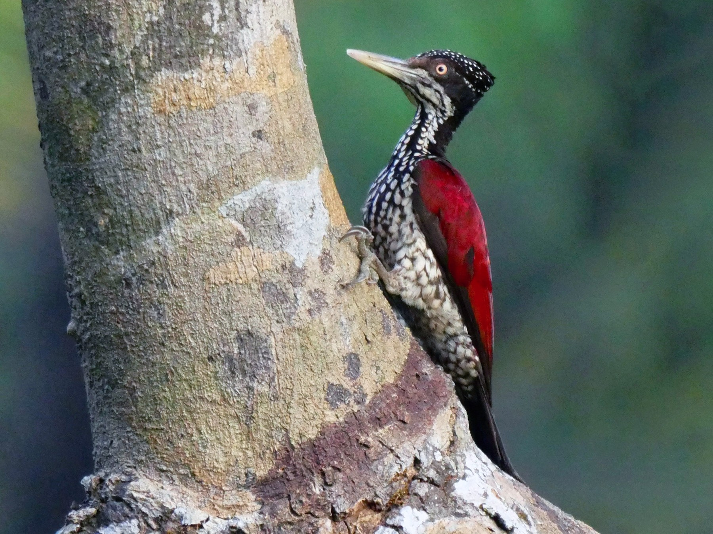
 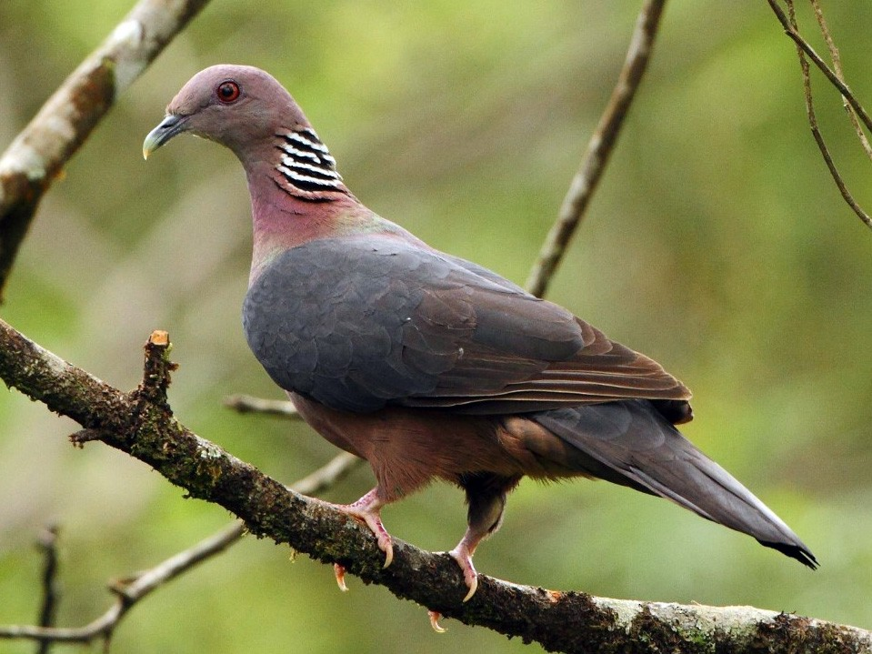
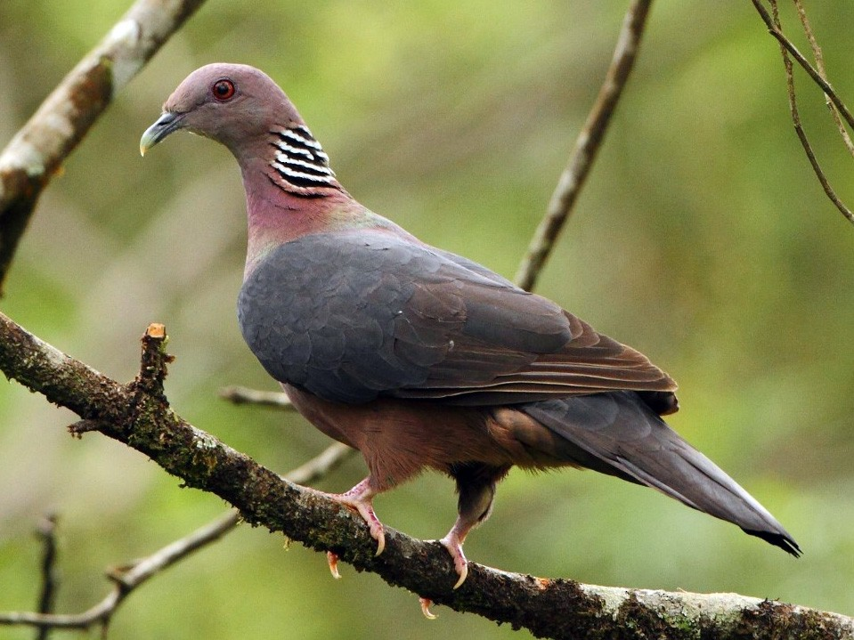
Sri Lanka's diverse avian tapestry unfolds with indigenous wonders like the colorful Sri Lanka Junglefowl, majestic Ceylon Blue Magpie, and acrobatic Sri Lanka Hanging Parrot, embodying the island's unique biodiversity.
FISH
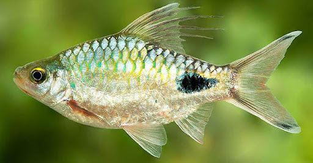 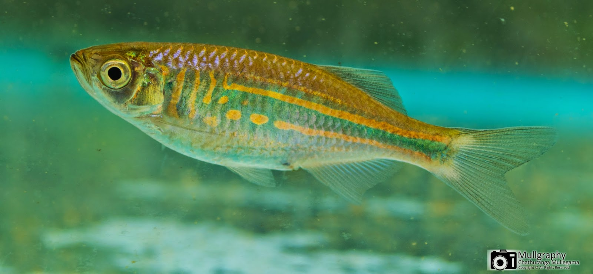 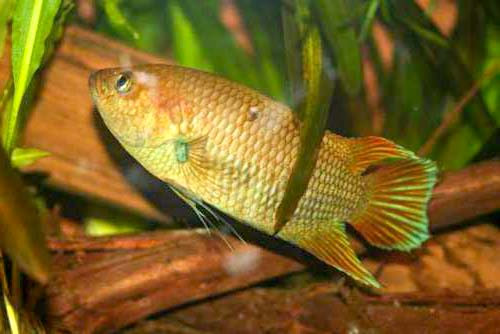
Sri Lanka's indigenous fish species thrive in diverse aquatic ecosystems, contributing to the island's rich biodiversity. Explore the unique and colorful underwater world that defines Sri Lanka's aquatic heritage.
REPTILES
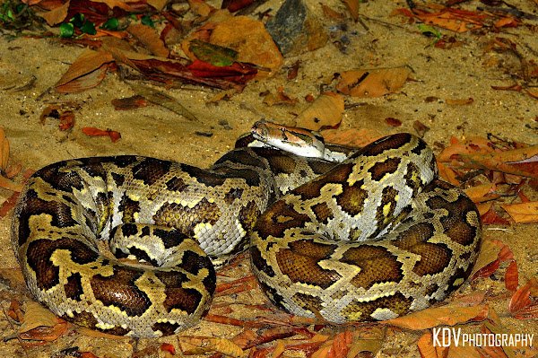 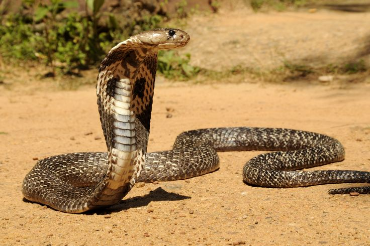 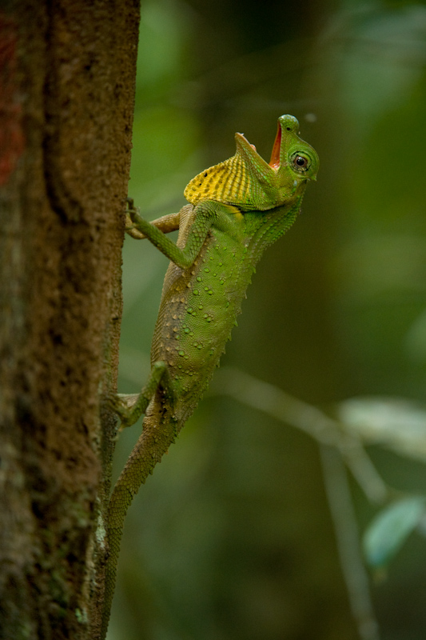
Sri Lanka is home to a captivating array of indigenous reptiles, showcasing remarkable biodiversity. From the venomous Ceylon Spitting Cobra to the beautifully patterned Indian Star Tortoise, discover their unique adaptations and habitats.
AMPHIBIANS
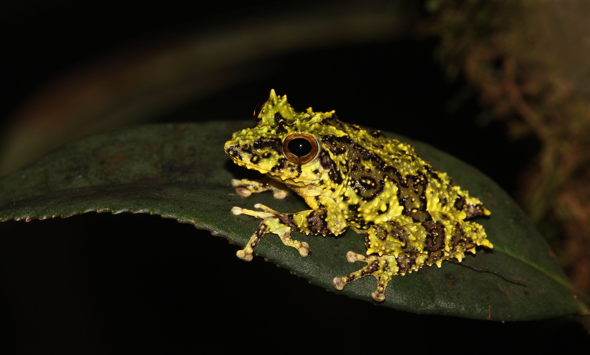 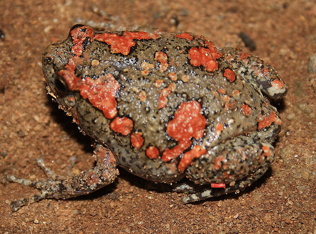 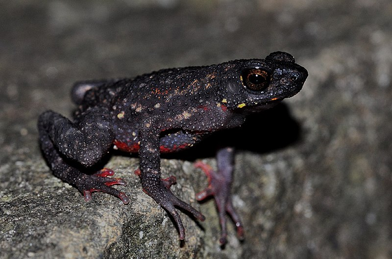
Explore Sri Lanka's rich amphibian diversity with unique and endemic species. From vibrant tree frogs to elusive caecilians, these indigenous amphibians contribute to the island's fascinating and ecologically vital ecosystems.